Implementation of a Research Data Repository using the Oxford Common File Layout standard at the University of Technology Sydney
2019-07-01
This is a presentation by Michael Lynch and Peter Sefton, delivered by Peter Sefton at Open Repositories 2019 in Hamburg. My travel was funded by the University of Technology Sydney.
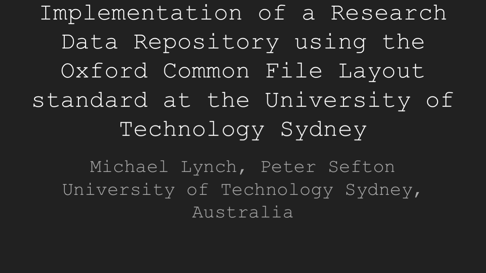
' title='Implementation of a Research Data Repository using the Oxford Common File Layout standard at the University of Technology Sydney Michael Lynch, Peter Sefton University of Technology Sydney, Australia' border='1' width='85%'/>
This presentation will discuss an implementation of the Oxford Common File Layout (OCFL) in an institutional research data repository at the University of Technology. We will describe our system in terms of the conference themes of Open and Sustainable and with reference to the needs and user experience of data depositors and users (many have large data, and or large numbers of files). OCFL, which is an approach to repository implementation based on static data, was developed to deal with a number of issues with “traditional” repository design, many of which are particularly acute when dealing with research data. We will cover how this meets our user and institutional needs and is a sustainable approach to managing data.
This was presented by Peter Sefton - so the “I” throughout is him.
This presentation was in a session about OCFL so we didn’t need to explain the standard in detail.
Here’s what they say on the OCFL site:
This Oxford Common File Layout (OCFL) specification describes an application-independent approach to the storage of digital information in a structured, transparent, and predictable manner. It is designed to promote long-term object management best practices within digital repositories.
Specifically, the benefits of the OCFL include:
- Completeness, so that a repository can be rebuilt from the files it stores
- Parsability, both by humans and machines, to ensure content can be understood in the absence of original software
- Robustness against errors, corruption, and migration between storage technologies
- Versioning, so repositories can make changes to objects allowing their history to persist
- Storage diversity, to ensure content can be stored on diverse storage infrastructures including conventional filesystems and cloud object stores
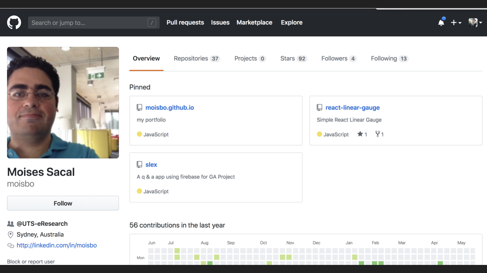
' title='' border='1' width='85%'/>
Also Moises Sacal worked with us on this.
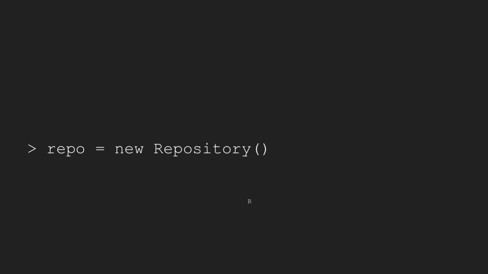
" title='> repo = new Repository()' border='1' width='85%'/>
Hello and welcome to this presentation about OCFL at UTS. Don’t be alarmed - yes there’s javascript code on the screen, but there will not be a test!
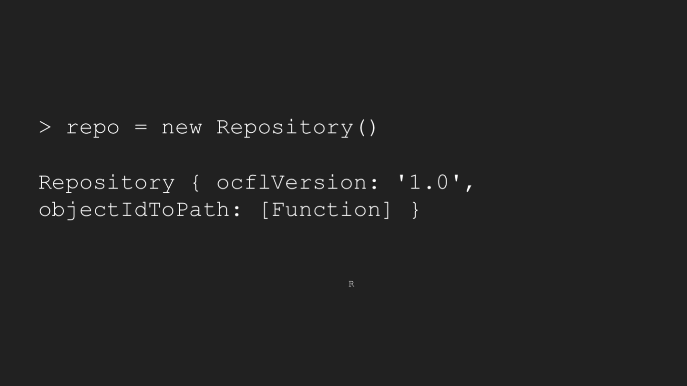
Repository { ocflVersion: '1.0', objectIdToPath: [Function] }R
' title='> repo = new Repository()
Repository { ocflVersion: '1.0', objectIdToPath: [Function] }
R
' border='1' width='85%'/>
To me, being able to type npm install ocfl then instantiate a repository in an interactive shell is quite amazing - when I first worked with repositories, from about 2006, installing a repository was a big job, there were usually lots of prerequisites and installation (for example see this guide to installing UQ’s Fez Fedora repository could be very finicky, but then in those days the repositories were “full stack” services whereas OCFL is just about the heart and soul of a repository, the storage.
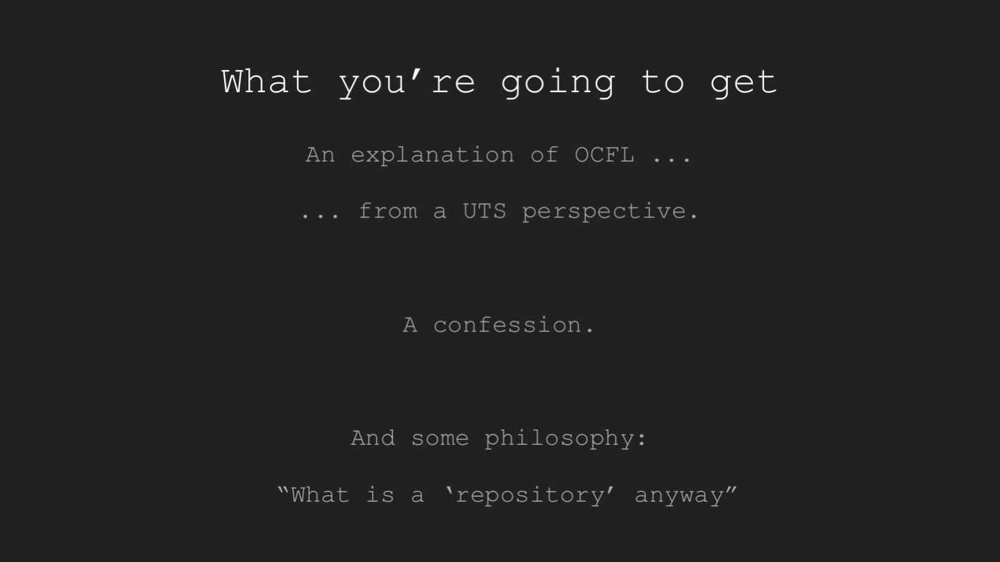
A confession.And some philosophy: “What is a ‘repository’ anyway” ' title='What you’re going to get An explanation of OCFL ... ... from a UTS perspective.
A confession.
And some philosophy: “What is a ‘repository’ anyway” ' border='1' width='85%'/>
This talk is not just about OCFL, it reflects on the role of repositories and how we should view them in our infrastructure.
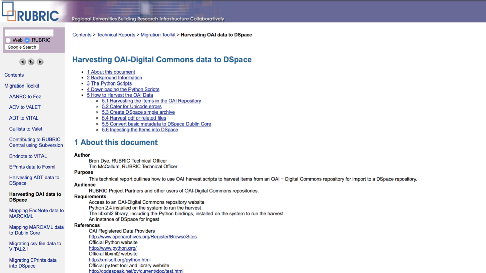
My first “Confession”.
Many, many years ago I was the technical manager for the RUBRIC project - Regional Universities Building Research Infrastructure Collaboratively. This project helped a group of about nine partner unis get their first publications repositories up and running and our team morphed into the the national repository support service for Australia. As part of this work we built a variety of migration tools to assist people in getting data from existing systems such as endnote, or ingesting MARC (library) metadata into a repository. To do this we used the DSpace archive format, a simple directory-plus-metadata file format that was not unlike OCFL.
It occurred to me at the time that we could build a simple static repository system that used something like the DSpace archive format, with separate ingest workflows, and build a portal using something like Apace Solr (though at that stage there really wasn’t anything else like Apache Solr).
I didn’t follow up on those thoughts, as I thought they were a bit heretical - the monolithic repository architecture was the orthodoxy, though I did flirt with this idea in this article about discovery portals and persistent identifiers. Anyway, it seems like those wrong thoughts are something I can talk about, now that we have OCFL.
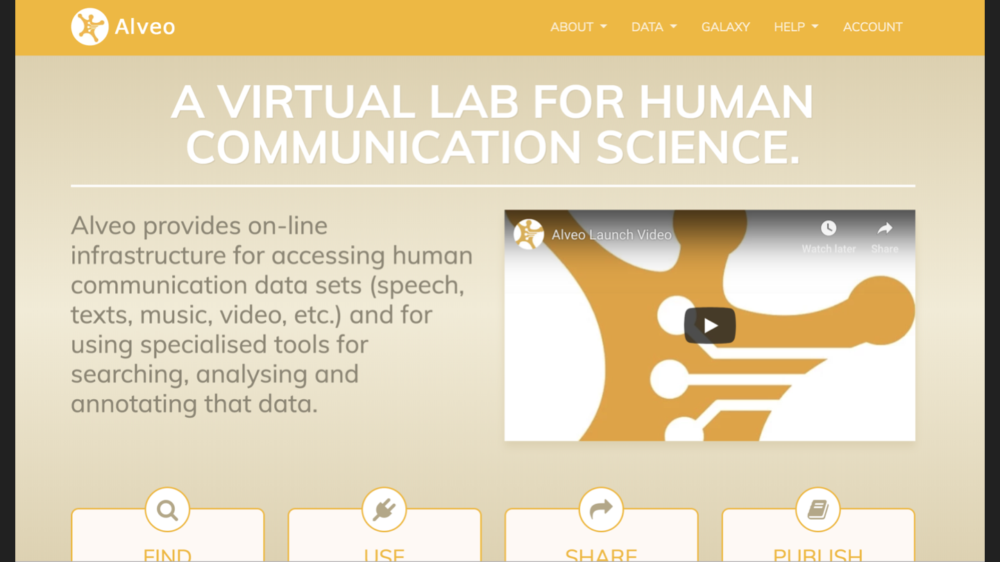
' title='' border='1' width='85%'/>
Confession 2
When I was working on the Australian Government funded NeCTAR Virtual Lab project, Alveo I suggested we start with a Hydra/Fedora repository as the ‘heart’ of the Virtual Lab, the repository component. That worked well in that we got up and running very fast with a discovery portal for data - but ran into problems when it came to data access - for example making Item Lists - data-sets - performed terribly because of the overhead inherent in the Hydra architecture.
I delivered a presentation at Open Repositories 2014, written with other Alveo staff, that explored some of the problems with using a “full stack” repository at scale.
Initially (and throughout the project) Steve Cassidy was suggesting a more OCFL-like way of loading data where it would be arranged on disk by some kind of curation human or machine orchestrated process and then indexed. Steve was right. I was wrong. I’d love to come back to the Alveo lab architecture for another go, maybe in a future round of ARDC investment?
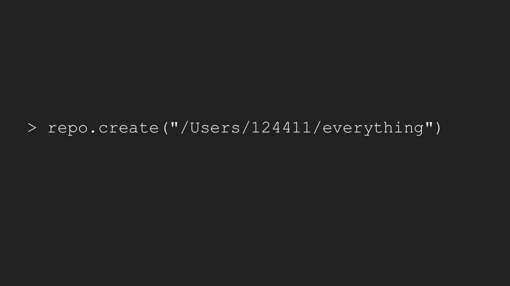
' title='> repo.create("/Users/124411/everything")' border='1' width='85%'/>
Like I said, creating a repository is this simple.
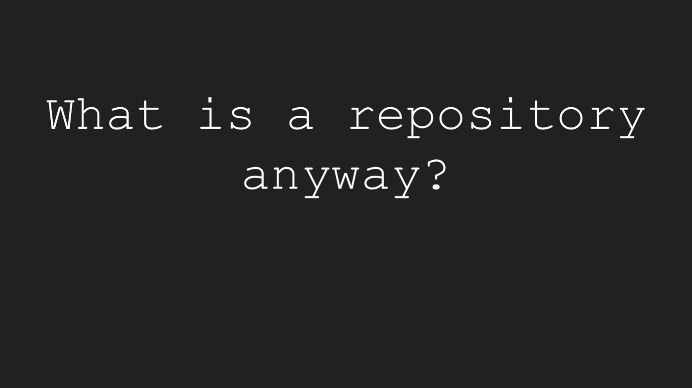
' title='What is a repository anyway?' border='1' width='85%'/>
But what is a repository?
![A lifestyle
An application for managing scholarly comms
A service or collection of services like a Library
A service or collection of services like an Archive
A service or [...] like a Records Management department
A place to put stuff
An software application to store stuff](Slide10.png "A lifestyle
An application for managing scholarly comms
A service or collection of services like a Library
A service or collection of services like an Archive
A service or [...] like a Records Management department
A place to put stuff
An software application to store stuff")
There are a variety of ways to look at a “repository” - all of these are facets of what a repository can be.
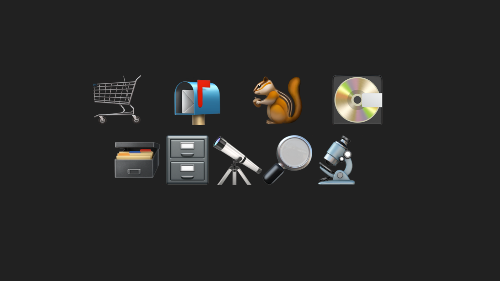
' title='🛒 📬 🐿 💽 🗃🗄🔭🔎🔬' border='1' width='85%'/>
Repositories are no longer just places to put stuff (if they ever were) - they’re positively bristling with services. Over the 13 years of this conference, repositories have become shall we say baroque. And in some cases slow. They also tend to have problems when you present them with a terabyte file, or ten million 1 kilobyte files. OCFL is, we think, in part a reaction from our community to those realities.
' border='1' width='85%'/>
Using OCFL as the storage layer in a repository is a radical separation of con-
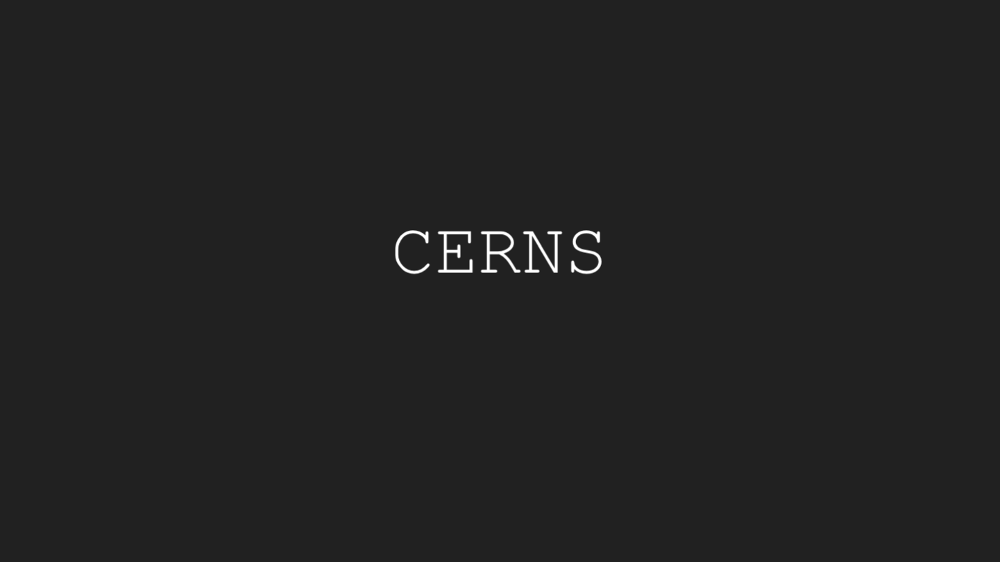
' title='CERNS' border='1' width='85%'/>
-cerns.
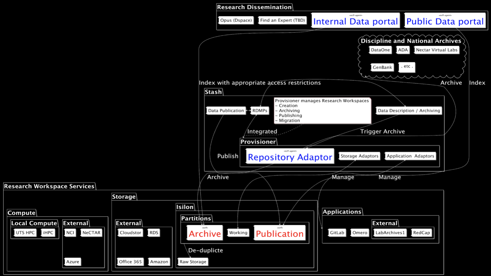
' title='' border='1' width='85%'/>
This is a view of our eResearch Architecture - Stash is our Data Management service, which is an implementation of ReDBox. The point of showing the diagram is not to go through it all in detail, but to show how complex the ecosystem of research data services can be - and where data archive / repository core sits. The OCFL components (the publication and archive file-systems) are shown in red, while Agents (the repository Adaptor that writes content from Research Workspace Services in a repository, the Public and Private data portales) that access OCFL are shown in blue.
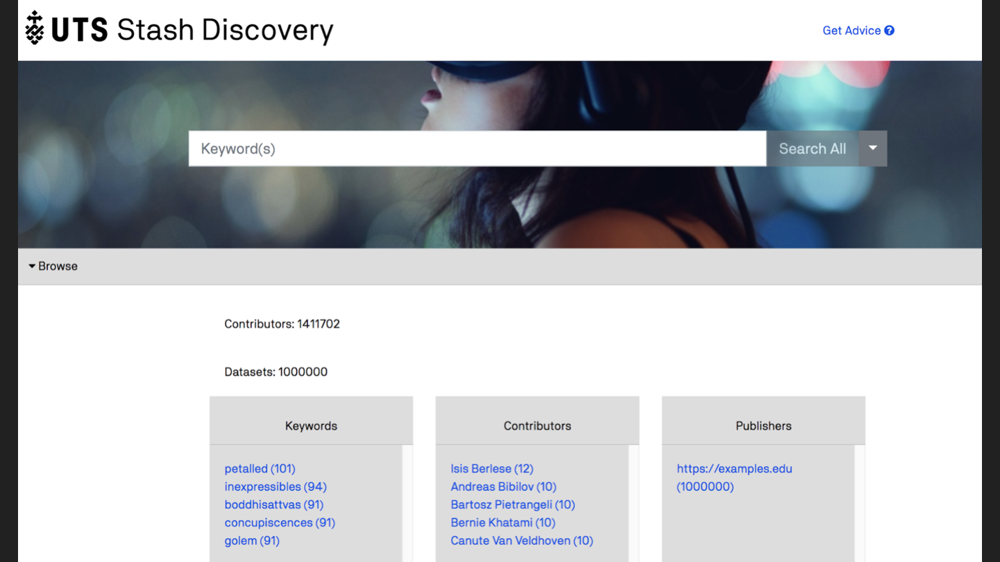
' title='' border='1' width='85%'/>
This is our work-in-progress discovery portal - this is not built in to the repository like it would be with, say DSpace, it’s a separate service that indexes an OCFL repository (in this case the public data).
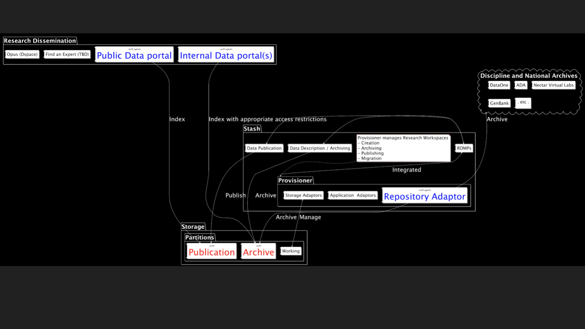
' title='' border='1' width='85%'/>
Here’s the same diagram stripped back a bit more ...
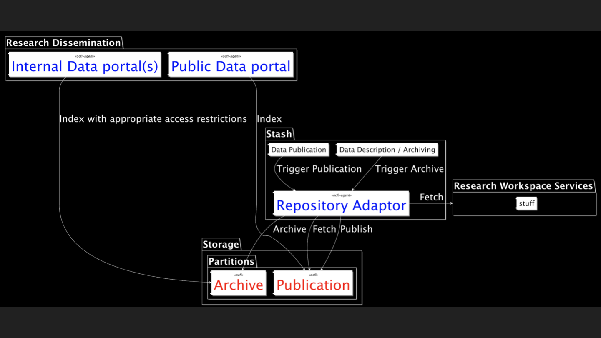
' title='' border='1' width='85%'/>
And even more stripped back, to show only the core repository service (in red) and a couple of services that interact with it (in blue).
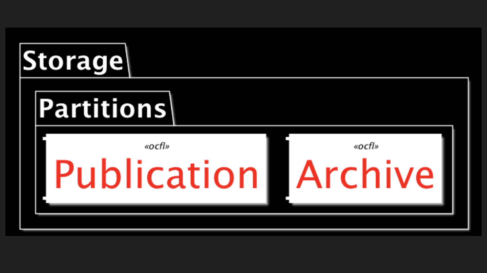
And here’s the actually repository part - the storage layer.
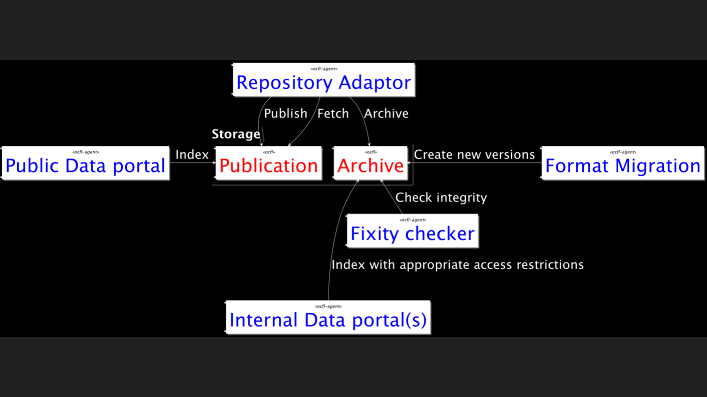
' title='' border='1' width='85%'/>
The idea of OCFL is that there are services that all access this core layer but they’re disposable and/or interchangeable, and you just leave your precious data where it is, on disk (or some virtual disk-like view of whatever the storage solution de jour happens to be).
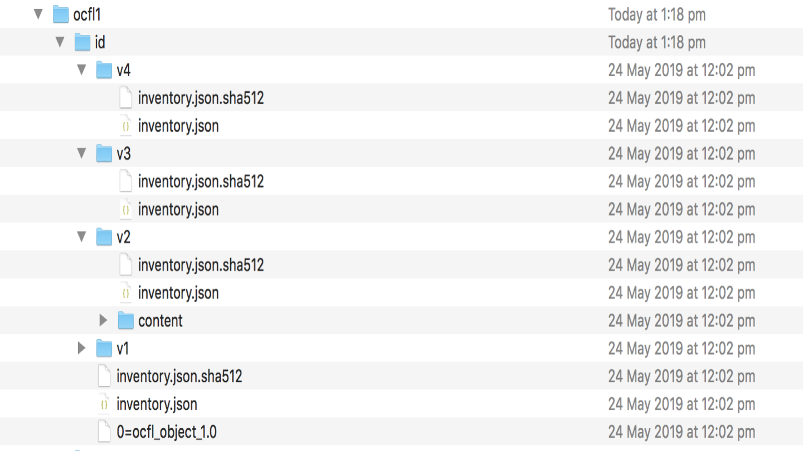
Here’s a screenshot of what an OCFL object looks like - it’s a series of versioned directories, each with a detailed inventory.
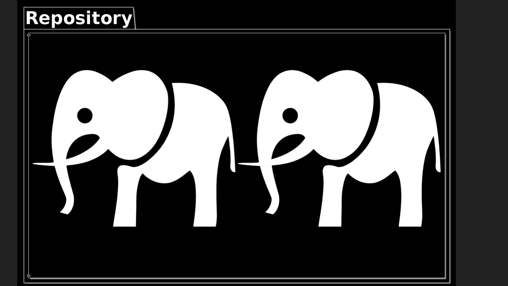
' title='' border='1' width='85%'/>
No this slide is not about a zoological repository. It’s about the Elephants in the repository AKA the risks that come with an OCFL implementation.
-
The main issue in implementation is making sure that you have to THINK about the design of software to update the repository at the same time. You don’t want to end up with (a) corrupt files or (b) transactions that didn’t complete.
-
OCFL is also very new (it’s not at version 1 yet) so there’s some risk that the services we are hoping for won’t arrive - but given that our data are still safe on our own storage infrastructure and it possible to code-up an OCFL consuming application in a matter of days this is not a serious risk.
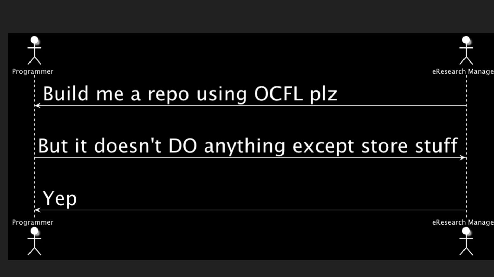
' title='' border='1' width='85%'/>
OCFL needs some explaining. I’ve had a couple of conversations with developers where it takes them a little while to get what it’s for.
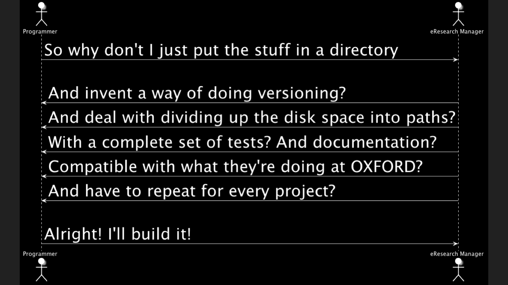
' title='' border='1' width='85%'/>
But they DO get it.
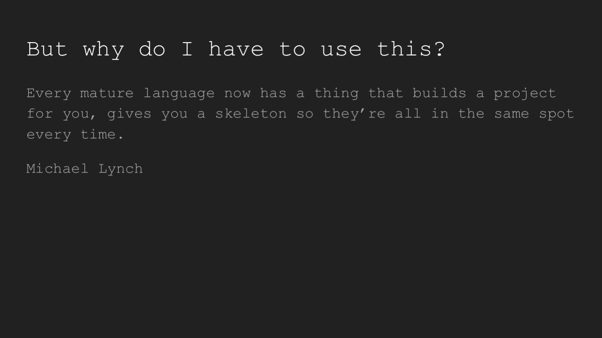
Mike Lynch’s summary - this is a modern take on “how to I organise my stuff” - in this sense OCFL is like a framework for data - and we all use frameworks for code these days,
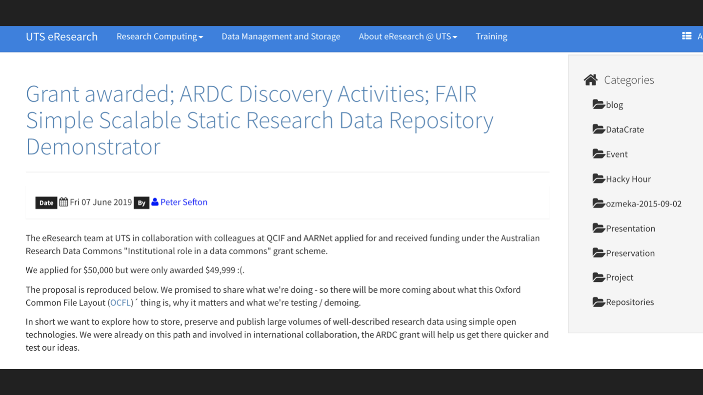
' title='' border='1' width='85%'/>
We have some good news to announce - we have a grant to continue our OCFL work from the Australian Research Data Commons. (I’ve used the new Research Organisation Registry (ROR) ID for ARDC, just because it’s new and you should all check out the ROR).
We’re going to be demonstrating large-scale use of OCFL, with research objects described using RO-Crate metadata. (See also my presentation on DataCrate which introduces RO-Crate).
' border='1' width='85%'/>
So what do we think?
Working with OCFL has been really great for the team at UTS - it’s well designed, and just when you think “hey, how do I do file-locking” you find that there’s a hint in the design (a /deposit directory in this case) that points towards a solution.
Over at the RO-Crate project Stian and Eoghan and I really liked the OCFL approach of having a clear spec with implementation notes, and we’re going to try to emulate that as we work on merging Research Object and DataCrate into one general purpose way of describing and packaging research data.
See also my presentation on DataCrate which introduces RO-Crate.